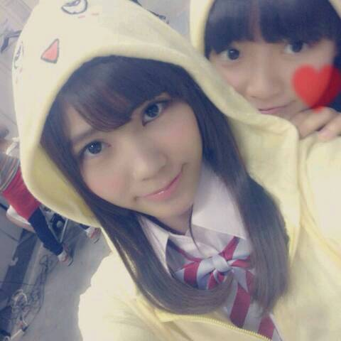

| 2014/07 16 Wed | ひめたん-OoO-その460 |
9thシングル個別握手会！
遊びに来てくださったみなさん
ありがとうございました( ^O^ )
お留守番ちーむのみなさん
報告お待たせしました♪

ぴひゃーー(´^o^｀)
3部、4部で今年も浴衣着ちゃったよ☆
去年も白の浴衣着たんだけど、
去年のとはまた違うやつだよー
なんと ゆったん (斉藤優里ちゃん)が
着付けしてくれました！
着付けできるなんて
なんたる女子力(゜゜)
ゆったんありがとうね＊
きゅんきゅん王国のみなさんからも
ゆったんにありがとう伝えといてねっ
そんなゆったんは私を
えくぼひめって呼んでくれるの。

こちらは1部
陽菜ちゃんとおそろいの
ふなっしーパーカーだなっしーーぷしゃあぁ
一緒に渋谷でお買い物してて
おそろいで買ったのー
何だかんだで仲良しなの私たち( ´ ▽ ` )ノ
これ読んだ陽菜ちゃんに
「は？」って言われたらやだなあ
じゃあここだけの話ね♪
そして2部では
水色？のさわやかーな
ワンピースを着ました！
容量の関係でまた後日貼る(´ ω ｀)
ヘアは
巻きおろし......1部
お花くるくる......2部、3部
ポニーテール......4部
でした！報告はそんな感じです◎
ここから感想。
9thの個握とゆことで
なんと関東4部制ヽ(〃∀〃)ノ
ちょっと前まで2部制だったひめたん歓喜！
きゅんきゅん王国のみなさんの熱い気持ちが
形になったのかなって思うと姫は感涙です。
こんなに握手会で長くお話したり
お洋服着替えたりできる日がくるなんて
みなさん本当にありがとう！
不器用な姫なりに
少しずつ恩返ししていけたらな＊゜
はじめましての方も
最近は多くて、ものすごく嬉しくて。
もっとひめたんのこと知って欲しいし
もっと仲良くなりたいな
ゆっくり仲良くなろうねよろしくね(ノ)・ω・(ヾ)
そしていつも来てくださる方は
ちょっと前までと時間帯がガラッと変わって
大変な思いさせてしまってたらごめんね
(ノ)・ω・(ヾ)
次回は8thシングルの握手会なので3部制です
間違えないでね！
そして1部に参加するよーって方は
ちょっと辛いかもしれないけど
早起き頑張ってみてね☆
さあ前回の乃木ののは
きいちゃん (北野日奈子ちゃん)
愛未 (能條愛未ちゃん)でした！
やーほんとに
私ってゲラなんかなあ(´・ω・｀)ごめんなさい
きいちゃんと愛未が
ラジオで腕相撲してました
伝わらないやーつー
ふたりとものびのびとしてて
個人的には楽しい回でした←誰
次回は
秋元真夏ちゃん
若月佑美ちゃんです☆
次回もお楽しみにっ！
乃木どこ、開運も見てくれたかな( ^^ )？
頭NO王になっちゃったまあや
かわいいほんとにかわいい。
この収録中ずっと笑ってばっかだったなあ
オンエア観返しても面白くて
夜中にひとりでケタケタ笑ってました←
開運は2週に渡っての乃木回
ありがとうございました。
楽しかったです！
あのアットホームな感じが
あたたかくてほっこりしました(＾ω＾)
またみさみさが忙しい時は
陽菜ちゃんとふたりで呼んでくださーい♪
そんバカコンビ好きって言ってくださる方
多くて嬉しい。ばれーったー♪
最後にっ
ヤンヤンさん、TopYellさんに
取材していただきました！
また告知しまーす♪

 (中略)
(中略)
変わりに、土下座3％で謝るので
許して下さいワン。(＃^.^＃)
これ読んだ瞬間に頭の中で
♪君は1000%
が流れた(＃^.^＃)ってゆーどうでもいい報告でした
かなりんブログで
肩からひめたんがシリーズ化されてるけど、
どうして肩から出るようになったの？
人の背中に隠れることが多いみたいで
肩から顔だけ出すってのやってたら
こんな状況です。
かなりーんシリーズ化ありがとう(´゜ω゜｀)おめ
眠くなった時に
起きてられる方法を教えてください。
ただしちょっと変わったトリッキーなやつで
お願いします[壁]_＾) ワクワク♪
火のついた薪をしょったら
いいんじゃないかな(＊^ω^＊)
カチカチ山みたいに♪
のぎ天って関東だけ？？教えてちょ笑
そんなことないし
むしろ世界中どこにいても観れる！
楽天SHOWTIMEってアプリを
ダウンロードしてみてね♪
ひめたんの日記の
コメント欄下２ケタに46を踏んだ方へ
手書きでコメ返するコーナー
＼ ひめたん46 ／

いつもたくさんのコメント
ありがとうございます
「ボーリング」じゃなくて「ボウリング」な！
あーもうこれ悔しい相当悔しい
ボーリングって確か
土質かなんかを検査するために穴掘るやつだよね
あーー悔しい(´ ω ｀)
ボウリングやってきました！
(＊´・ω・＊)
コメント(633)
2014/07/16 23:24